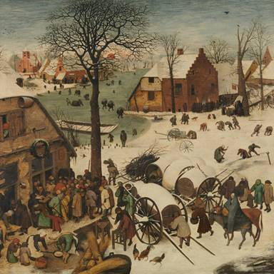
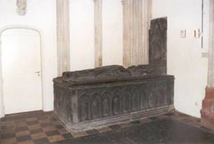
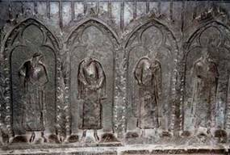
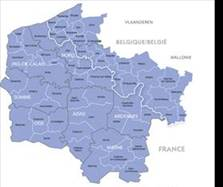

> Zannekin
Nieuwsbrief > 37e jg. - nr. 2/2019
Bijdragen over:

|
Hernieuwen ledenbijdrage voor 2019
De
penningmeester dankt voor de vlotte wijze waarop gehoor gegeven
werd aan zijn verzoek tot vereffening van de bijdrage voor 2019.
De “nalatigen” kunnen hun verzuim alsnog herstellen. Even ter
herinnering: de bijdrage voor het in mei 2019 te verschijnen
nieuwe Jaarboek De
Nederlanden ‘extra muros’ en voor de
driemaandelijkse Nieuwsbrief
Zannekin
beloopt 29 €. Vanaf 35 € wordt u met dank als steunend lid
geboekt. Vereffenen kan enkel nog gebruik maken van ons
‘Belgische’ zogenaamd ‘Europees’ rekeningnummer iban BE13 4648 2202 5139 – bic: KREDBEBB waarvan de
rekeningoverzichten ons dagelijks meegedeeld worden.
Oudste
jaargangen van de Zannekin-Nieuwsbrief
Op www.zannekin.org vindt men onder de ‘link’ Nieuwsbrief alle Zannekin-Nieuwsbrieven vanaf de eerste uitgave van 2001. De jaargangen 1983 (de eerste) tot en met 2000 bestonden tot nog toe alleen maar op papier. Daar kwam recent verandering in. Deze tot nog toe digitaal nog niet beschikbare jaargangen werden ingescand en zijn thans beschikbaar op onze webpagina’s. Ze zijn bovendien deels doorzoekbaar zijn via zoektermen die het consulteren ervan vlot mogelijk maakt.
Studie-uitstap op zondag 5 mei 2019 - “Bruegel achterna het Brussel en het Pajottenland”
10.30
uur:
Samenkomst
lokettenhal Centraal Station Brussel – busrit naar Anderlecht,
Neerpede, Sint-Anna-Pede, Sint-Gertrudis-Pede, Dilbeek,
Gaasbeek.
12.30
uur:
Bruegelmaal in de Appelboom in Anderlecht-Neerpede.
14.30
uur:
Wandeling in Brussel (het Bruegel-huis, het standbeeld van
Bruegel door Tom Frantzen, de Kapellekerk, de
Bruegel-fonteintjes, e.a.
16.30
uur
Koffie met gebak in het “Goudblommeke van Papier”
17.30
uur
Einde voor wie wil. Het “Goudblommeke” ligt op wandel-afstand
van het Centraal Station.
Gidsing: Machteld
de Schrijver en Walter de Decker.
Deelnemersprijs: leden:
60,00 € per persoon., niet-leden: 65 €.
Aanmelden en betalen: tot
uiterlijk 29 april via het secretariaat: cf. p. 2
voor
wie
met de auto komt: parkeergarage Grote Markt, Grasmarkt 104, 1000
Brussel (24/7 open, maximaal € 14,90 per dag).
PS: Vanaf zaterdag 4 mei 2019 zijn er in
Brussel verschillende tentoonstellingen gewijd aan Bruegel. Het
valt dus te overwegen om al op zaterdag naar Brussel te komen en
deze op eigen houtje te bezoeken.
Aanvullend Bruegel-gebeuren:
Op
zaterdag
11 mei 2019 bezoeken
we in het Musée de Flandre te Cassel de aldaar lopende
Bruegel-tentoonstelling. Info hieromtrent via Leo Camerlynck,
e-adres: leo.camerlynck@skynet.be
Tentoonstelling
De Schatten van Munster
Op zaterdag 22 juni plant Jan van
Tongeren met een klein groepje een bezoek aan Munster in
Westfalen. Dit naar aanleiding van de tentoonstelling De Schatten van Munster
uit de schatkamer aldaar.
Het is de bedoeling om o.a. de kathedraal,
het Museum, de Vredeszaal 1648, de Lambertuskerk en het Huis der
Nederlanden te bezoeken. Aanvang om 12.00 uur (dit in verband
met lange reistijd) voor de ingang van de Kathedraal. Kosten
15.00 € per persoon exclusief entree's. Wie hiervoor interesse
heeft gelieve dit bedrag over te maken op rekening
NL79abna0545554977 t.n.v. Jan van Tongeren, Maarssen, e-adres j.h.v.t@ziggo.nl
Ontmoetingsdag te Leiden op zaterdag 19 oktober
Voorlopig programma
10.30-11.00
uur: ontvangst met koffie en een gebakje in Stadscafé Van der
Werff, Steenstraat 2, 2312 BW Leiden.
11.00-11.10
uur: opening en welkomstwoord door Leo Camerlynck.
11.10-11.45
uur: lezing door Dick Wortel over Zuid-Nederlandse vluchtelingen
waaronder Frans-Vlamingen in Leiden.
11.45-12.00
uur: vragen.
12.00-12.45
uur: Lezing. door de Leidse historicus Cor Smit.
12.45-14.00
uur: Lunch.
14.00-16.00
uur: Wandeling door de stad langs punten die betrekking hebben
op de Vlaamse en Waalse immigratie.
16.00-17.00
uur: Afsluitende borrel in Het Pakhuis, Doelensteeg 8, 2311 VL
Leiden. Via een “Rembrandt-route” kan naar het NS-station Leiden
Centraal worden gewandeld.
Parkeren binnen de singels is in Leiden erg duur. Alternatieven: Parkeergarage bij Molen De Valk. Parkeermogelijkheid ook aan de Haagweg. Ook mogelijk: gratis parkeren bij NS-station De Vink en vandaar met de trein (duur: 4 min.) of met de bus (lijnen 1, 2, 3 en 4 naar NS station Leiden Centraal). Leiden is uitstekend te bereiken met de trein. Alle verdere info vindt je in onze Nieuwsbrief 3/2019.
Rene ten Dam
De Domkerk in Utrecht moet vroeger rijk
zijn geweest aan een aantal grote en imposante graftombes. Zo
zouden er tussen de drieëntwintig en achtentwintig bisschoppen
zijn begraven in de kerk, hun aantal is echter niet precies
bekend.
Tot in de 10e eeuw werden bisschoppen
uitsluitend in de Salvatorkerk begraven. Bisschop Balderik
herstelde de door de Noormannen beschadigde Dom en vond er als
eerste bisschop in 976 zijn laatste rustplaats. Ook is zeker dat
bisschop Hendrik van Vianden, die in 1254 de eerste steen legde
voor de bouw van de gotische Dom, in de Domkerk is begraven.
De meeste grafmonumenten zijn in de loop
der tijd verdwenen. Ook de Domkerk ontkwam niet aan de
Beeldenstorm van 1580, hoewel destijds de vernielingen
waarschijnlijk wel meevielen. De jaren na 1580 hebben de
kanunniken die in de Domkerk aanwezig bleven, een aantal
grafmonumenten en altaren gedemonteerd. Mogelijk heeft het
interieur van de kerk meer schade opgelopen bij de talrijke
restauraties dan bij de daadwerkelijke Beeldenstorm zelf.
Bovendien stortte in 1674 het schip in, de daar aanwezige
grafmonumenten zijn daarbij verloren gegaan.
Het oudste grafmonument dat nog in de Dom
is te zien is de graftombe van Guy (Gwijde) van Avesnes. Hij
overleed in 1317. Het is een van de zeer weinige bisschoppelijke grafbeelden in Nederland. De tombe staat
in de, later, naar hem vernoemde kapel in de zuidelijke
koorzijbeuk.
Guy van Avesnes stamde van vaderszijde af
van de graven van Henegouwen en Vlaanderen, van moederszijde van
het Hollandse gravenhuis. Hij was de broer van Jan II, hertog
van Henegouwen, Holland en Utrecht. Hij behoorde dus tot de
regerende families van de Lage Landen. In 1301 werd Guy van
Avesnes benoemd tot bisschop. Enkele jaren later, in 1304, werd
hij gevangen genomen in Zeeland, maar na een mislukte poging om
Guy van Vlaanderen op de bisschopsstoel te krijgen, werd hij
weer vrijgelaten. In 1306 schonk hij stadsrechten aan Amsterdam.
Hieraan herinnert zijn afbeelding op het zegel van de stad
Amsterdam. Pas in 1309 ontving Guy van Avesnes de vorstelijke
voorrechten van de koning van het Heilige Roomse Rijk en werd
hij door het wereldlijk gezag volledig als bisschop erkend.
Guy van Avesnes werd geprezen als
wereldlijk vorst, maar hem werd verweten dat hij te weinig tijd
nam voor het geestelijke bestuur van zijn bisdom. Om het bisdom
van zijn schulden te ontlasten, brak de bisschop zijn kostbare
hofhouding op en begaf zich als particulier persoon in 1313 naar
Frankrijk, waar in Avignon de Paus zetelde. Guy van Avesnes trad
in 1311 al op tijdens het eerste Avignons Concilie te Vienne. De
kerk werd gedurende zijn verblijf in het buitenland bestuurd
door wijbisschoppen en kapittels.
In 1317 keerde Guy van Avesnes terug naar
Utrecht om een Friese opstand in Overijssel te keren. Korte tijd
later stierf hij op 29 mei. Het gerucht ging dat hij vergiftigd
was. Hij zou zijn bijgezet in de kapel naast zijn voorganger,
Willem II van Mechelen. Het is echter de vraag of het lichaam
van deze bisschop tussen 1301 en
De Doornikse steen (zwart kalksteen) van
de graftombe komt uit Henegouwen en heeft grote stilististische
overeenkomsten met andere Doornikse grafbeelden.
De zijkanten van de tombe zijn versierd
met nisjes met pleuranten, waarvan de hoofden zijn vernield.
Op de dekplaat ligt de bisschop in vol ornaat, onder een
baldakijn in biddende houding en met de voeten op een leeuw.
Goedbeschouwd is de bisschop staand afgebeeld en als het ware
neergelegd. Door beschadigingen kunnen we niet meer zien of de
ogen geopend waren of gesloten.

Het beeld is gericht naar het oosten, waarbij geopende ogen de
blik gericht op het Laatste Oordeel zou versterken. De
uithollingen in de mijter, de handschoenen en de randen rond het
beeld waren vroeger gevuld met gekleurde stenen. De
bisschopsstaf is ook verdwenen, maar twee holten wijzen nog de
plaats aan waar deze zich bevond. De eerste vernielingen zullen
plaats hebben gevonden in 1580, mogelijk zullen in latere jaren
ook anderen bijgedragen hebben aan de vernielingen.
Tijdens de restauratie van de grafkelder
in 1921 werden verschillende voorwerpen in de grafkelder
gevonden. De gevonden grafgiften bevinden zich nu in het
Centraal Museum in Utrecht. In 1960 is de tombe geconserveerd,
waarbij de missende delen niet werden aangevuld.
In de kapel naast die van Guy van Avesnes
heeft een vergelijkbare graftombe van Doornikse steen gestaan.
De graftombe van Jan van Arkel werd echter al in 1661 gesloopt.
Enkele stukken werden in de vloer gemetseld, terwijl delen van
de zijwanden werden verwerkt in het nu nog aanwezige hek.
________________
ü Mirjam Beerman, Frans van Burkom, Frans Grijzenhout
(red.): Beeldengids Nederland; Rotterdam (1994).
ü P. Borst, A. de Groot, J.G. Jonker-Klijn, R. Roks:
Graven en begraven in de Dom van Utrecht; Bunnik (1997).
ü G.C. van Nieuwenhuizen: Gwijde van Avesnes,
Bisschop van Utrecht 1301-1317; scriptie RUU (1976).
ü G. . van der Zee: Vaderlandsche
Kerkgeschiedenis; Kampen (1936).
© tekst + foto's René ten Dam 2002.
Met dank ontleend aan: www.dodenakkers.nl/artikelen/avesnes.html
Reisdoelen Stichting Zannekin van 1983 tot 2018
Waar trokken de leden van de
Vereniging/Stichting ZANNEKIN naartoe en met welke delen van de
Nederlanden - inclusief de Nederlanden “extra muros” - maakten
ze in de voorbije kwarteeuw nader kennis? Ons bestuurslid Rudi Koot zocht het
uit en vatte het samen in onderstaand rooster.
|
Jaar |
|
SU:
Studie-uitstappen OD:
Ontmoetingsdagen |
|
1983 |
SU |
Kamerijk / Cambrai, Valencijn /
Valenciennes, Sint-Amands aan de Skarpe /
Saint-Amand-les-Eaux |
|
1983 |
OD |
Klooster Frenswegen bij Nordhorn
en gedeeltelijk in Lingen zelf |
|
1984 |
SU |
Frans-Henegouwen en de Tierasse /
Thiérache (Beaumont / Biômont, Cousolre, de vallei van
de Hante, Solre-le-Château, Avenne-aan-de-Helpe /
Avennes-sur Helpe, Mabuse / Malbode / Maubeuge) |
|
1984 |
OD |
Kasteel Gemen bij Borken |
|
1985 |
SU |
Streek van Bitburg / Béibreg en
Clerf / Clervaux / Klierf (het oude graafschap /
hertogdom Luxemburg) |
|
1985 |
OD |
Belle / Bailleul |
|
1986 |
SU |
Korbie / Korbei / Corbie en
Sint-Rikiers / Saint-Riquier (Steden aan de Zomme /
Somme) |
|
1986 |
OD |
Burcht
‘Das Hohes Haus’ te Nienborg-Heek |
|
1987 |
SU |
Millen, Ophoven, Wassenberg,
Linnich, ’s-Hertogenrade / Herzogenrath |
|
1987 |
OD |
Santen / Xanten |
|
1988 |
SU |
Frans-Vlaamse Westhoek: onder
andere Hazebroek / Hazebrouck en Waten / Watten |
|
1988 |
OD |
Het oude hertogdom Limburg – Slag
bij Woeringen / Worringen 5 juni 1288: onder andere
Sint-Martens-Voeren / Fouron-Saint-Martin, Limburg /
Limbourg |
|
1989 |
SU |
Tournehem, Le Waast,
Heimfriedswilder / Wierre-Effroy, Bonen-aan-Zee /
Boulogne-sur-Mer, Merck-Saint-Liévin |
|
1989 |
OD |
Aurich / Auerk |
|
1990 |
SU |
Saint-Gérard (Waalse Folkloristische
Marsen) |
|
1990 |
OD |
Kassel / Cassel |
|
1991 |
SU |
Luxemburg in Frankrijk: Margut,
Avioth, Montmédy, Marville |
|
1991 |
OD |
Doornik / Tournai / Tournè |
|
1992 |
SU |
Waldniel, Bruggen / Brüggen,
Wachtendonk, Arcen |
|
1992 |
OD |
Vreden |
|
1993 |
SU |
Boussu, Kiezenet / Le Quesnoy, Berlaymont,
Dompierre-sur-Help, Avenne-aan-de-Helpe /
Avesnes-sur-Helpe |
|
1993 |
OD |
Edingen / Enghien / Inguî |
|
1994 |
SU |
Bourgondië |
|
1994 |
OD |
Dowaai / Douai |
|
1995 |
SU |
Meurs / Moers |
|
1995 |
OD |
Rijsel / Lille |
|
1996 |
SU |
Monsterole / Montreuil, Sint-Joost /
Saint-Josse-sur-Mer |
|
1996 |
OD |
Duisburg |
|
1997 |
SU |
Brussel / Bruxelles |
|
1997 |
OD |
Kamerijk / Cambrai |
|
1998 |
SU |
Sint-Winoksbergen / Bergues-Saint-Winoc /
Bergues |
|
1998 |
OD |
Kempen |
|
1999 |
SU |
Slagvelden in de Zuidelijkste
Nederlanden: Fontenoy (1745), Steenkerke / Steenkerque
(4 augustus 1692) , Bovingen / Bouvines (27 juli 1214),
Sikelin / Seclin, Pevelenberg / Mons-en-Pévèle (18
augustus 1304), Bavik / Beuken / Bavay, Malplaquet (11
september 1709), Fleurus / Fleûru (1 juli 1690),
Jemappes (6 november 1792) |
|
1999 |
OD |
De
stad Luxemburg / Luxembourg / Lëtzebuerg |
|
2000 |
SU |
Atrecht / Arras |
|
2000 |
OD |
Munster / Münster |
|
2001 |
SU |
Kevelaer |
|
2001 |
OD |
Broekburg / Bourbourg en
Grevelingen / Gravelines |
|
2002 |
SU |
Guldensporenslag 11 juli 1302:
Kortrijk / Courtrai en Betun / Béthune |
|
2002 |
OD |
Slag bij Waterloo / Waterlô 18
juni 1815 |
|
2003 |
SU |
West-Munsterland:
Dinxperlo, Bocholt, Raesfeld |
|
2003 |
OD |
Sint-Omaars / Saint-Omer |
|
2004 |
SU |
Slag op de Pevelenberg /
Mons-en-Pévèle 18 augustus 1302 |
|
2004 |
OD |
Zierikzee (zeeslag op de Gouwe bij
Zierikzee 10 en 11 augustus 1304) |
|
2005 |
SU |
In het spoor van Sint-Aldegonde –
Henegouwen aan weerszijde van de grens:
Mont-Saint-Aldegonde, Lobbes, Thuin, Fontaine-Valmont,
Cousolre, Mabuse / Malbode / Maubeuge, Zinnik / Soignies
/ Sougnie |
|
2005 |
OD |
Keulen / Köln |
|
2006 |
SU |
Aan weerszijden van de Leie:
Wervik / Werviq, Komen / Comines / Comène, Busbeke /
Bousbecque, Waasten / Warneton / Warneuton, Hazebroek /
Hazebrouck, Ariën aan de Leie / Aire-sur-la-Lys,
Liegesboort / Lisbourg |
|
2006 |
OD |
Amsterdam |
|
2007 |
SU |
Straelen, Kevelaer, Gelre / Gelder
/ Gelderen / Geldern, |
|
2007 |
OD |
Emden |
|
2008 |
SU |
Halle / Hal, Edingen / Enghien /
Inguî, Lessen / Lessines |
|
2008 |
OD |
Wezel / Wesel |
|
2009 |
SU |
Doornik / Tournai / Tournè |
|
2009 |
OD |
Kornelimünster (vroeger:
Sint-Cornelis Munster) |
|
2010 |
SU |
Sandwich (Nederlands, verouderd:
Zandwijds) |
|
2010 |
OD |
Bentheim (Nederlands, verouderd:
Bentem, Benthem) |
|
2011 |
SU |
Hondschote / Hondschoote, Kassel /
Cassel, Noordpene / Noordpeene |
|
2011 |
OD |
Burtscheid |
|
2012 |
SU |
De stad Luik / Liège / Lüttich /
Lîdje |
|
2012 |
OD |
Nieuwstad Ask / Villeneuve d’Ascq |
|
2013 |
SU |
Vrede van Utrecht 11 april 1713,
Barrièresteden: Veurne / Furnes, Ploegsteert, Waasten /
Warneton / Warneuton, Komen / Comines / Comène,
Zuid-Wervik / Wervicq-Sud, Menen / Menin, Rijsel / Lille |
|
2013 |
OD |
De stad Namen / Namur / Nameur |
|
2014 |
SU |
Longueval en Gouy |
|
2014 |
OD |
Erkelens / Erkelenz |
|
2015 |
OD |
Ophain-Bois-Seigneur-Isaac |
|
2015 |
SU |
Henegouwen aan weerszijden van de
schreve: Bergen / Mons / Mon, Boussu, Konde /
Condé-sur-l’Escaut |
|
2016 |
SU |
’s-Gravenhage / Den Haag / La Haye |
|
2016 |
OD |
Belle / Bailleul |
|
2017 |
SU |
Lampernisse, Hondschote /
Hondschoote, De Moeren / Moerkerke / Les Moëren,
Duinkerke / Dunkerque, Kwaadieper / Quaëdyper, Rubroek /
Rubrouck, Brokzele / Broxeele, Arneke / Arnèke, Kassel /
Cassel |
|
2017 |
OD |
Eupen, Vaals (Vierlandenpunt
1839-1920: Duitsland, Nederland, België, Neutraal
Moresnet (1816-1920)) |
|
2018 |
SU |
Waten / Watten en Noordpene /
Noordpeene. Slag aan de Pene 11 april 1677 |
|
2018 |
OD |
Ravenstein / Land van Ravenstein |
Südtirol? Alsace/Elsass, Histoires
croisées?
C’est le nom du
dernier ouvrage de Bernard Wittmann, paru aux Editions Nord
Alsace (ENA). Le sous-titre donne le ton: La volonté de
s’émanciper au Südtirol, l’Alsace et les illusions perdues.
L’idée de départ
est de brosser un portrait croisé de ces deux régions
germanophones et de leurs destins respectifs à partir de 1919,
date à laquelle elles ont été annexées par deux pays latins
centralisés, la France pour l’Alsace, l’Italie pour le Südtirol.
Le livre débute
par un bref rappel sur l’histoire de ces deux régions, dont on
découvre qu’elles avaient, au Moyen-âge, plus de points en
commun que l’on pourrait croire. Leur appartenance au Saint
Empire Romain Germanique est certes bien connue, mais qui savait
que le Sundgau et le Südtirol ont été gouvernées pendant plus de
trois siècles (de 1363 à 1648) par la lignée tyrolienne des
Habsbourg? Alors que le Tyrol restera unie jusqu’en 1919,
l’Alsace, elle, sera annexée en plusieurs étapes par la France
et deviendra une pomme de discorde entre la France et
l’Allemagne, ses deux voisins.
Convergences et
divergences
Un point clé du
destin tyrolien est le rôle joué par ses partis politiques, en
particulier la Südtiroler Volkspartei (SVP). Dès sa création en
1945, ce parti démocrate-chrétien a pris le flambeau de la
défense des Tyroliens du Sud, de leurs droits linguistiques et
de leur volonté d’émancipation. Parti uniquement régional, la
SVP a su fédérer derrière elle toute la population, qui, en
retour, lui a assuré un règne politique sans partage dans le
Südtirol depuis sa création.
Pendant ce temps,
l’Alsace suit le chemin inverse: après 1945, les
démocrates-chrétiens, qui avaient porté avant-guerre le flambeau
de l’autonomisme, se dissolvent dans les partis nationaux
français. Par leur servilité envers Paris et les Gaullistes, ils
collaborent à la destruction culturelle et politique de
l’Alsace, tout en essayant de sauver les apparences.
Alors qu’au
Südtirol, la cohésion entre le peuple et ses élites a permis une
véritable marche vers l’émancipation, la situation est toute
autre en Alsace. Entre Vosges et Rhin existe un véritable fossé
entre le peuple et la bourgeoisie. En effet, depuis la
Révolution, la majorité de la (haute) bourgeoisie alsacienne a
choisi en majorité le camp de Paris. Et à des moments clés de
l’histoire (à l’issue de chaque guerre notamment) elle a trahi
les intérêts du peuple alsacien pour quelques médailles ou par
mercantilisme.
Une longue marche
Malgré tout, la
marche du Südtirol vers son émancipation n’a pas été un long
fleuve tranquille, loin de là! Les Tyroliens ont du tout d’abord
affronter le fascisme italien avant se retrouver pris en étau
entre Mussolini et Hitler. Après la seconde guerre mondiale,
Rome lâche un peu de lest et adopte une attitude plus
constructive vis-à-vis du Südtirol. Notons qu’au même moment
l’orgueilleuse France accentue sa répression contre les
minorités nationales en métropole et dans les colonies.
Néanmoins, malgré
la pression internationale, les promesses italiennes sont vagues
et rarement suivies d’effet. Aussi, dans les années 1960, les
habitants du Südtirol, excédés, prennent les armes. Jusqu’en
1980, les attentats du B.A.S. (Befreiungs-Ausschuss-Südtirol),
qui ne font la plupart du temps que des dégâts matériels,
mettent Rome sous pression. Ce n’est que dans les années 1970
que sera progressivement mis en place un statut d’autonomie qui
mettra d’ailleurs près de vingt années à se concrétiser.
Savoir ce que l’on
veut et le dire haut et fort
Un autre élément
important explique la réussite du Südtirol: c’est la permanence
depuis 80 ans d’une revendication claire et sans concession, à
savoir le retour du Südtirol au sein de la mère patrie
autrichienne. Il en a résulté une opposition frontale avec le
pouvoir central italien, lequel a progressivement lâché du lest,
en espérant affaiblir la revendication rattachiste.
Cette opposition a
abouti à une autonomie politique croissante. Selon Bernard
Wittmann, le niveau d’autonomie atteint semble aujourd’hui
satisfaire la majorité de la population et s’avère être un bon
compromis.
Mais, ne
l’oublions jamais, l’autonomie n’est pas un statut stable et
figé. Ce n’est que la résultante à un instant précis de
l’opposition entre un pouvoir centralisateur et des forces
émancipatrices. Si l’une ou l’autre force s’affaiblit ou revoit
unilatéralement ses prétentions à la baisse, l’équilibre se
déplace automatiquement.
Il est intéressant
de noter que, dans la quasi-totalité des cas, les régions
européennes qui ont obtenu un statut d’autonomie, le doivent à
la présence d’un mouvement indépendantiste ou rattachiste.
Est-ce la condition nécessaire pour qu’un état centralisé daigne
modifier sa façon de fonctionner? En France, les exemples corses
et ultramarins semblent confirmer cette hypothèse.
En Alsace, depuis
150 ans, différents mots d’ordre se sont succédé et ont cohabité
avec des fortunes diverses: régionalisme, autonomisme,
rattachement à l’Allemagne ou la France (selon la période), ou
indépendantisme. Où serions-nous aujourd’hui si la revendication
alsacienne était portée depuis 80 ans par un seul mouvement
indépendantiste fort et structuré? La question mérite d’être
posée.
Mir welle bliewe was mir sin
En choisissant de
comparer l’Alsace et le Südtirol, Bernard Wittmann ignorait
nullement les différences de contexte entre les deux régions. Il
a en fait démontré avec brio ce que l’Alsace aurait pu
(pourrait) obtenir aujourd’hui si elle avait pu (pouvait)
compter sur une société alsacienne unie derrière des
revendications claires.
Assurément,
l’Alsace, région riche coincée entre deux nations belliqueuses,
ne bénéficiait (bénéficie) pas des meilleures cartes pour
assurer aisément son épanouissement politique. La tâche était
(est) certes difficile mais pas impossible. Aussi, cette
brillante étude sur le Südtirol pourrait être utilement
complétée par l’étude d’un autre cas, très intéressant pour
l’Alsace: le Luxembourg.
Arrivé à
l’indépendance un peu par hasard, ce pays, grand comme la moitié
du Bas-Rhin, a su faire face tant bien que mal aux ambitions de
ses voisins. Le Luxembourg a lui aussi connu la dictature
militaire allemande pendant les deux guerres mondiales. Il a
connu une industrialisation effrénée suivie d’importantes
mutations sociétales. Il en a néanmoins gardé son identité
culturelle, sa langue et son indépendance. Il a su développer
ses infrastructures en coopérant avec ses voisins et ‘ouvrer
pleinement à la construction européenne, non comme spectateur
alibi mais comme acteur.
Si
proche de nous historiquement, culturellement et
géographiquement, le Luxembourg mériterait bien que l’on
s’intéresse de plus près à son destin modèle?
Leo Camerlynck
Gekibbel over
taal in de Frans-Vlaamse Westhoek
Nog nooit haalde het taalgebruik in de
Frans-Vlaamse Westhoek zoveel krantenkoppen als de jongste
maanden. Ook radio en televisie tekenden present. Wat was of is
de aanleiding? De publicatie van een Woordenboek van het
West-Vlaams door de Akademie van Nuuze Vlaemsche Taele
(ANVT) deed heel wat stof opwaaien.
Op zichzelf kan daar niet echt bezwaar
tegen geopperd worden ware het niet dat de initiatiefnemers zich
qua taalinterpretatie een Neder-landsvijandige houding aanmeten.
Er bestaan tal van publicaties en woordenboeken over
plaatselijke dialecten doch hier wordt geponeerd dat het in de
Frans-Vlaamse Westhoek gesproken Vlaams evenzeer afwijkt van het
Nederlands als het Nederlands van het Duits m.a.w. het is een
aparte taal. Komt daarbij dan nog dat er een eigen spelling werd
ontworpen en nieuwe woorden werden “uitgevonden”
Veel Frans-Vlamingen bejegenen dit met
lede ogen. Een groot aantal onder hen zijn ronduit verbitterd.
Het is in hun ogen niet alleen een stap achteruit maar een
zoveelste verdeeldheid in de al zo moeizame erkenning van het
Nederlands in deze van oudsher Nederlandstalige regio. Wij
berichten er u later uitgebreider over.
Welkom op de
Waalse taalpagina!
Ja, zo word je vriendelijk verwelkomd op
de leuke en leesvriendelijke webstek http://users.skynet.be/lorint/wallang/wal-ned.html
De handig opgestelde webstek bezorgt interessante informatie
over het Waals als taal en cultuur.
Zo lezen wij dat het Waals
ontstond tussen de 8e en de 12e eeuw uit de overblijfselen van
de Latijnse taal die naar onze streken gebracht werd door
soldaten, handelaars en ‘kolonisten’ uit Rome. Het maakt deel
uit van de Romaanse taalfamilie en van de Gallo-Romeinse
subgroep (ook ‘oïl’ subgroep genoemd), waarvan het meest bekende
lid het Frans is.
Een aparte taal? Het Waals is nauw verwant
met het Frans, maar mag niet gezien worden als een dialect van
het Frans, hoewel het vaak zo beschouwd wordt. De relatie zou te
vergelijken zijn met die tussen Schots en Engels in
Groot-Brittannië, of Asturianu en Castellano in Spanje, of
Letzebuerguesch en Duits in Luxemburg.
Het Waals is waarschijnlijk de ‘oïl’ taal
die het best heeft kunnen overleven in de schaduw van het Frans.
Vandaar dat een studie van deze Romaanse taal veel verklaart.
Sociolinguïstisch is het Waals één
van de vele ‘vergeten talen’ (of ‘regionale’, ‘minder
gebruikte’, ‘bedreigde’ ‘minderheidstalen’,...), die leven in de
schaduw van een linguïstische grote broer. Het aantal sprekers
van het Waals is tamelijk stabiel gebleven tot het begin van de
20e eeuw: ondanks een langzaam afname, vooral in de hogere
sociale klassen, gebruikte het grootste deel van de bevolking
enkel Waals in het dagelijkse leven. Maar het aantal sprekers
verminderde aanzienlijk tussen 1930 en 1960. Vandaag, hoewel er
geen grootschalige sociolinguïstische enquêtes gehouden worden
op enkele lokale onderzoeken na, kan het aantal regelmatige,
actieve sprekers geschat worden op 35-40% van een totale
bevolking van 3.200.000. 10 % van de jongeren (20-30 jaar)
zeggen dat ze actieve sprekers zijn, en 40-60 % dat ze een
passieve kennis hebben.
Het percentage ligt hoger als we diegenen
meerekenen die de taal enkel begrijpen. Het aantal mensen dat
Waals kan lezen en schrijven is weliswaar heel erg laag. Er zijn
geen of heel weinig eentalige sprekers, alhoewel er nog steeds
een handvol zijn voor wie het de meest gebruikte taal is, vooral
onder de personen die vóór de vijftiger jaren van de vorige eeuw
geboren zijn.
Het aantal sprekers is verminderd en zo
ook het functionele en het sociale bereik van de taal: de
verfransing begon in de hogere sociale klassen. De burgerij
begon ook Frans te gebruiken in de 18e-19e eeuw. Dan zag de rest
van de bevolking dat er geen sociale toekomst was buiten het
Frans, de enige taal in de Waalse scholen.
“Alle ouders begonnen hun kinderen in het
Frans op te voeden (of vaak een dialectvorm van het Frans, in
mindere of meerdere mate beïnvloed door het Waals). Nu wordt de
functionaliteit stilaan tot het uiterste minimum herleid, met
sommigen die beweren dat het Waals enkel maar moet gerespecteerd
worden als een overblijfsel van het verleden, een literaire taal
of in het beste geval ‘de taal van het hart’, maar niet voor
dagelijks gebruik”, vermeldt het artikel.
Hoewel er lange tijd een groep filologen
geweest is die het Waals wilden propageren (d.w.z. de literatuur
en de studie van de dialecten), is er pas recent een beweging op
gang gekomen ten voordele van de Waalse taal, die gewoonweg het
gebruik ervan wil stimuleren en die volhoudt dat er voor het
Waals nog steeds een rol weggelegd is in de hedendaagse Waalse
samenleving.
Officiële aandacht kwam er in 1990, met
het goedkeuren van een decreet dat het bestaan erkent van
‘regionale talen’ in de Franse Gemeenschap (m.a.w. Wallonië
en het Franstalige gedeelte van Brussel) van de Belgische
federale staat. Het decreet stelt dat deze talen bestudeerd
moeten worden en hun gebruik aangemoedigd. Een speciale
commissie voor ‘regionale talen’ werd in het leven geroepen bij
het Ministerie van Cultuur, maar tot dusver is er nog niet veel
gebeurd: de tijd die beschikbaar is voor het Waals op televisie
is verder ingekrompen, er wordt weinig of niets gedaan in de
scholen. Her en der zijn straatnaamborden tweetalig. Maar daar
blijft het meestal bij. De Waalse literatuur is vandaag
weliswaar springlevend met nieuwe auteurs die regelmatig in
verscheidene tijdschriften verschijnen. En het theater is nog
steeds succesvol met meer dan 200 niet-professionele
gezelschappen in de steden en dorpen van Wallonië, die jaarlijks
spelen voor een publiek van meer dan 200.000 mensen. In de media
is het Waals aanwezig op de officiële televisie (ongeveer 2 uur
op zaterdagmiddag) en op de officiële radio (ongeveer 3 uur op
vrijdagavond). Desalniettemin staat de taal voortdurend onder
druk wegens inkrimping van het budget en de zendtijd.
Verscheidene Franstalige commerciële radio’s en nationale
kranten en tijdschriften laten ruimte voor het Waals. Het Waals
is sporadisch aanwezig in de kerk. Na een boom in de jaren ‘70
is het Waalse lied nu uit de mode geraakt, hoewel er een
hernieuwde belangstelling is met enkele nieuwe rockgroepen die
in het Waals zingen. De belangrijkste instelling voor de
bevordering van het Waals is de Union Culturelle Wallone (UCW),
die bestaat uit vijf provinciale afdelingen en meer dan 250
lokale Waalse verenigingen, waarvan de meeste
theatergezelschappen zijn, maar ook bv. Auteurs-verenigingen of
de vijf provinciale commissies “Walon è Scole” (Waals op
School). Of nog “Les Walons scrîdjeus” van wijlen Roger
Viroux, die bestuurslid van Zannekin was. De belangrijkste
doelstellingen van de UCW zijn het promoten van het gebruik van
het Waals voor de basisfuncties op de basisniveaus van het
sociale leven (bv. in familiekring), terwijl men er ook voor
zorgt het uitgebreide netwerk van verenigingen (theater) te
verdedigen en te coördineren en de aanwezigheid van het Waals in
de media, de scholen, de wetten, enz. te ondersteunen. Al deze
informatie en nog veel meer kan men op de reeds aangehaalde
webstek lezen.
Nog een nieuw
en ambitieus Interreg-programma tussen Vlaanderen,
Wallonië en Noord-Frankrijk
Het programma “France-Wallonie-Vlaanderen”
met vijf Franse en Belgische regio’s wil samenwerken stimuleren
om de grens te vervagen. Het programma voor Europese
Territoriale Samenwerking Interreg France-Wallonie-Vlaanderen is
ontstaan vanuit de wil om economische en sociale uitwisselingen
te vier grensregio’s: de regio’s Hauts-de-France en Grand Est in
Frankrijk, Wallonië, West- en Oost-Vlaanderen in België. Het
programma wil gemeenschappelijke deskundigheid samenvoegen en
tegelijkertijd het potentieel van elke betrokken regio
valoriseren, ten voordele van de bevolking van de zone. Een
totaal bedrag van 170 miljoen euro afkomstig uit het Europees
Fonds voor Regionale Ontwikkeling (EFRO) zal aan het programma
toegekend worden om projecten te ondersteunen die aansluiten bij
de 4 thema’s van de samenwerking: 1) onderzoek, innovatie en
technologieoverdracht; 2) concurrentievermogen van kmo’s; 3)
patrimonium, natuurlijke hulpbronnen en risicobeheer; 4) sociale
samenhang, gezondheid, opleiding en tewerkstelling.
Leo
Camerlynck, Voorzitter
Stichting Zannekin
Edouard Michielsstraat 51, 1180 Ukkel /
Brussel
e-post: leo.camerlynck@skynet.be -
celfoon : 00 32 485
630 22